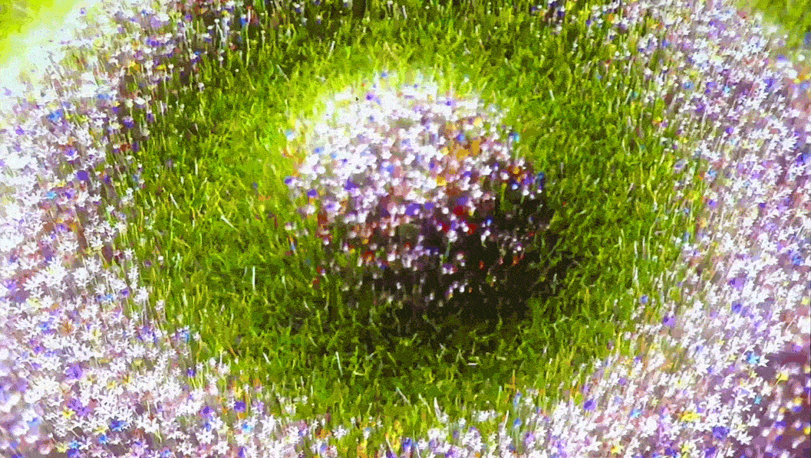
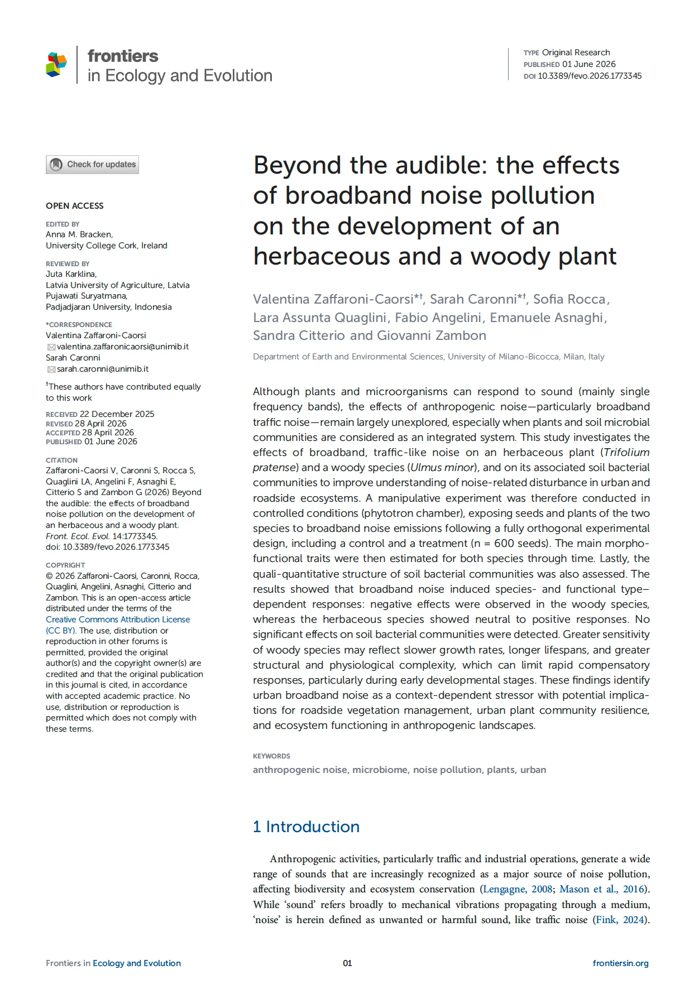
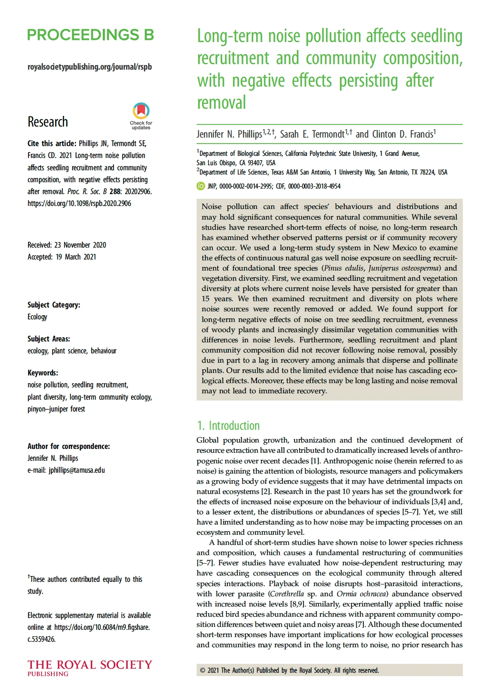
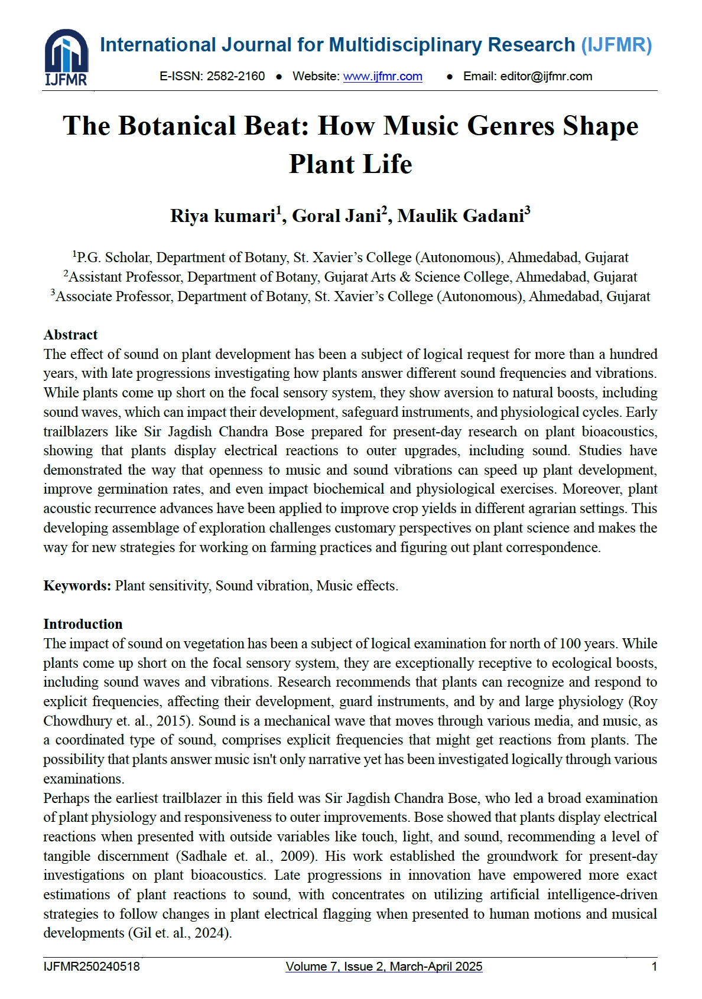
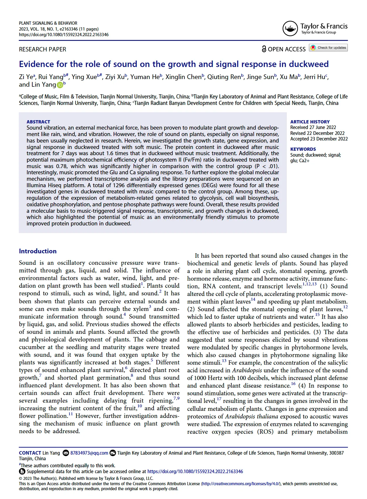
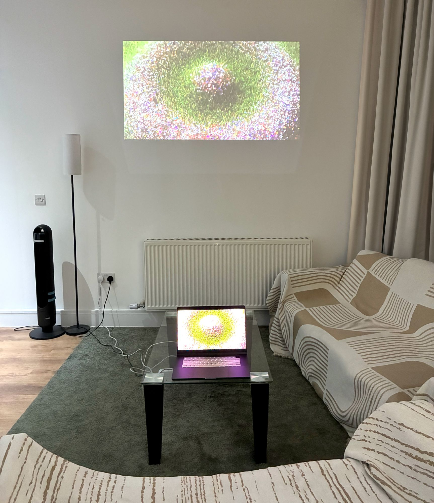
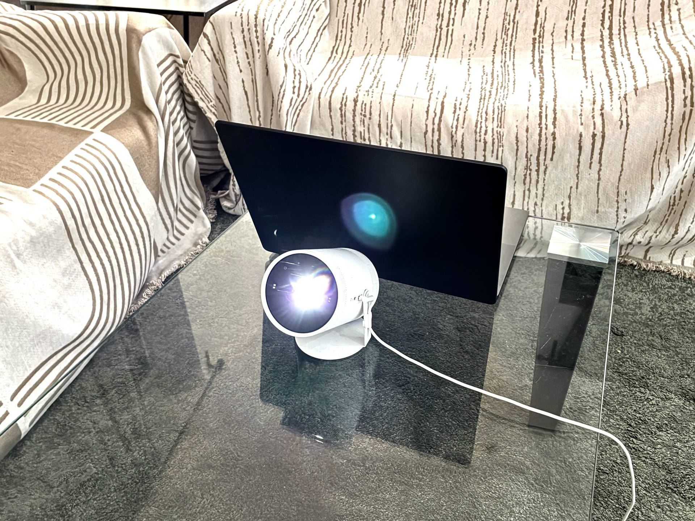
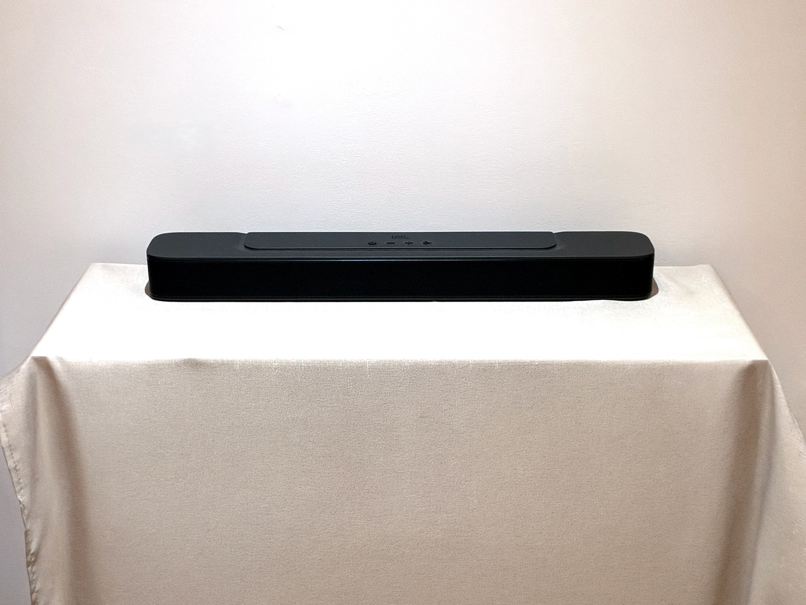

What if flowers grooved to your playlist instead of just listening?
Louder Healing:
Interactive Audio-Visual Installation
Louder Healing is a real-time interactive installation that explores the emotional dialogue between humans and digital botany. Inspired by ecological studies on sound and plant health, the project investigates how seeing nature groove to our personal music tastes can enhance emotional well-being. Built entirely from scratch in TouchDesigner, the installation translates acoustic data—volume, rhythm, and speed—into organic, procedural floral animations in real time. User testing confirmed that watching the flowers harmonize with their favorite tracks triggered instant smiles and a calm, hypnotic escape, creating a playful bridge between sound, technology, and emotional recovery.




Reviewing key ecological and biological literature revealed a clear divide between harsh noise and harmonious music:
The Design Pivot: Closing the Emotional LoopWhile these studies proved that music benefits plant biology, little research had examined the reverse: Can watching plants react to our favorite tracks comfort us in return?
I hypothesized that observing nature move to music we love would create a direct, positive emotional response. To bring this dynamic to life, I designed Louder Healing, an interactive installation built from scratch in TouchDesigner.
Real-Time Audio Analysis (CHOP)To create responsive motion, the system captures environmental sound and playback via the built-in microphone. The acoustic stream is routed through Audio Device, Math, Analyze, and Lag CHOPs, extracting volume, tempo, and transient beat hits while smoothing data transitions to avoid erratic spikes.
Procedural Flora & Botanical Modeling (POP)Flower anatomy and organic geometry are generated procedurally using TouchDesigner’s POP network (Pattern, Skin, Twist, Circle, Copy, and Normal). This procedural approach allows the petals and stems to deform organically based on the incoming sound data.
Grass Dynamics & Field Distribution (CHOP + POP X)Grass motion uses a hybrid system where animation rates and sway speeds are driven by CHOP channels (Speed, Noise). To manage complex scattering across the canvas, the setup employs POP X (Instancer, Randomize, Texture Falloff, and Remap Falloff), achieving dense instancing with varied orientations without dropping frame rates.
Post-Processing & Visual Fidelity (TOP)The final visual output runs through a real-time TOP pipeline to achieve depth and atmospheric polish, using Render, Bloom, Luma Blur, and OpenColorIO color calibration to translate raw geometry into a cinematic visual landscape.
Processing Unit16-inch MacBook Pro (M5 Max) driving simultaneous real-time GPU rendering and audio analysis
Acoustic Input & OutputBuilt-in microphone array acting as the real-time sensor, paired with a JBL SoundBar 2.0 MK2 for balanced spatial audio playback
Spatial ProjectionSamsung The Freestyle (2nd Gen) mapping dynamic generative botany onto the physical wall surface to create an immersive environment

Wall Projection Space

Projection & Processing Unit

Audio Output
Idle State
(Without Audio)
Low-Tempo Music Input
(Track: Interstella by Gacabe & Jecabe)
Mid-Tempo Music Input
(Track: Life is Wet by CAMO)
Up-Tempo Music Input
(Track: Gisèle by Emma Peters)
High-Tempo Music Input
(Track: 60’s Cardin by Glen Check)
Rapid-Tempo Music Input
(Track: Faint by Linkin Park)
Evaluation Focus Areas
Observation Methods & ProtocolWith each participant’s explicit consent, behavioral responses and live interactions were video-recorded throughout the session. Immediately following the interaction, a qualitative debrief interview was conducted and audio-recorded, also with prior consent.
Interview Questions
User Session 01
Tester: Evaneh
ObservationThe participant demonstrated an enthusiastic and analytical response throughout the session on the laptop display. Maintaining an attentive yet relaxed posture and a bright facial expression, she connected strongly with the organic visuals, noting that the lifelike botanical motion offered a meaningful emotional connection—particularly resonant for someone living in a dense urban environment.
Key Insights & FeedbackHer response offered strong validation for the project’s core emotional intent, confirming that nature-themed generative visuals provide a comforting mental escape for city dwellers. In addition to praising the color palette, she contributed a detailed sonic-visual critique: separating high-frequency percussion from melodic elements in the audio analysis pipeline would enable more nuanced, distinct micro-choreographies. This provided a concrete technical direction for refining the CHOP network.
Audio Feedback
User Session 02
Tester: Claudia Hodgkinson
ObservationThe participant displayed a dynamic and joyful reaction throughout the session on the laptop display. When the heavy bassline kicked in, her eyes widened and she pointed directly at the screen, immediately noticing the synchronized shift in floral movement. Her locked-in focus and bright expression demonstrated that physical synchronization between audio transients and digital botany triggers immediate engagement and mood elevation.
Key Insights & FeedbackThe interaction generated spontaneous laughter and deep fascination, with the participant admitting she was completely lost in the visuals and unable to take her eyes off the elements moving to the bass. This reaction confirmed that the TouchDesigner network delivered a sufficiently precise audio-reactive mapping for users to connect specific sonic inputs directly to generative transformations. Her response provided strong empirical validation for the core hypothesis: observing botanical motion driven by pleasing music creates an immediate burst of positive emotion.
Audio Feedback
User Session 03
Tester: Lupine Wolf
ObservationThe participant expressed immediate delight, vocalizing her affinity for the project from the outset. She was particularly captivated by the depth-of-field rendering, noting the aesthetic balance between sharp foreground focal elements and softened backgrounds. Her open and engaged body language showed that the visual fidelity successfully sustained her interest and delivered a genuinely uplifting experience.
Key Insights & FeedbackHer aesthetic evaluation validated the variable focus technique, confirming that cinematic camera rendering adds measurable experiential depth. In addition, she offered a sharp technical critique of the animation flow: the procedural movements felt slightly “jerky” during sudden tempo shifts. Her recommendation to smooth out these moments identified a clear iteration target—refining the CHOP interpolation and damping filters between beat changes to produce seamless, organic transitions.
Audio Feedback
User Session 04
Tester: Inci Su
ObservationThe participant was deeply fascinated by the visual aesthetic on the laptop display. Selecting a track by Pink Floyd, she synchronized her emotional state with the piece, connecting the song’s psychedelic atmosphere with the real-time procedural movement of the digital flowers. Continuous head nodding and technical questions regarding the rendering pipeline reflected both high aesthetic engagement and strong intellectual appreciation.
Key Insights & FeedbackThe session confirmed that thematic alignment between visual textures and a participant’s personal musical genre amplifies overall emotional resonance. She also provided actionable critique regarding the ambient state: when no audio was detected, the idle motion felt slightly too rigid and “harsh.” This identified a key refinement target: softening the default procedural parameters during moments of silence to preserve a calm, organic breathing quality.
Audio Feedback
User Session 05
Tester: Matvei
ObservationThe participant sat still with a sustained gaze, deeply focused on the laptop display as the visuals responded in real time to his chosen music. His relaxed posture and attentive expression showed that even on a compact screen without a physical projection setup, the interaction successfully fostered a calm, positive, and genuinely fascinated emotional state.
Key Insights & FeedbackHe described the viewing experience as “quite hypnotic,” noting that it compelled him to keep watching continuously. This reaction offered strong early validation that audio-reactive botanical motion can induce positive emotions independently of scale. Concurrently, he provided a crucial critique: despite the high visual fidelity, the procedural patterns began to feel repetitive and slightly too fast over time, underscoring the need to introduce greater rhythmic variety and layout divergence for extended interactions.
Audio Feedback
What Worked WellThe real-time audio-reactive visuals performed effectively in evoking positive emotional responses. Participants described the organic floral motion as “hypnotic” and responded strongly to the rendering quality, especially the aesthetic contrast created by the variable depth of field. These reactions validated that a music-driven digital botanical ecosystem can offer an engaging, comforting escape for people living in dense urban settings.
Areas for RefinementTesting revealed several mechanical and visual areas requiring tuning:
Iterations Implemented in the Final BuildTo resolve these friction points and finalize the installation, three core technical refinements were implemented in TouchDesigner:
Core Takeaways on the Research QuestionThe testing sessions provided direct empirical validation for the central hypothesis: music-reactive procedural flora can instantly trigger positive emotional states and deep engagement. Furthermore, the feedback underscored that emotional immersion relies heavily on interaction fidelity. Because abrupt movements, rigid idle states, or visual repetition disrupted the experience, implementing seamless beat interpolation and nuanced audio separation in the final build proved essential to sustaining a deeply comforting, unbroken state of healing.